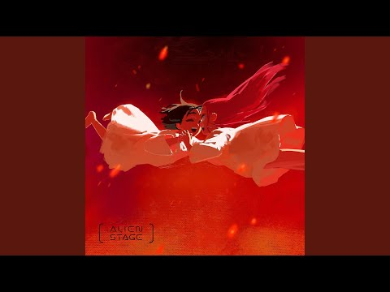
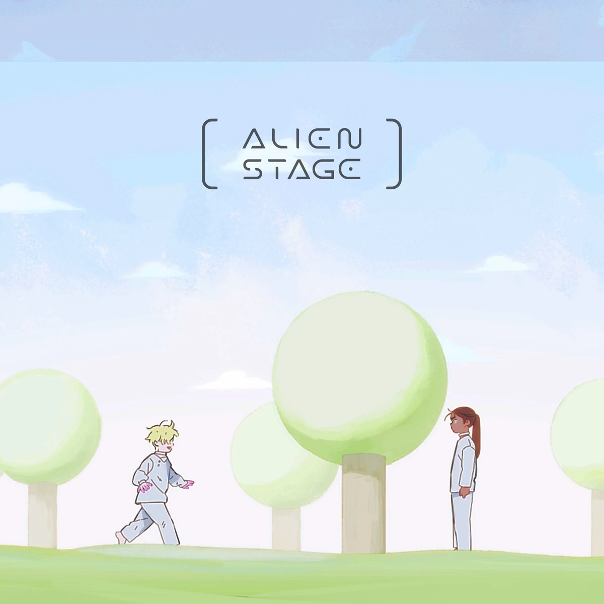
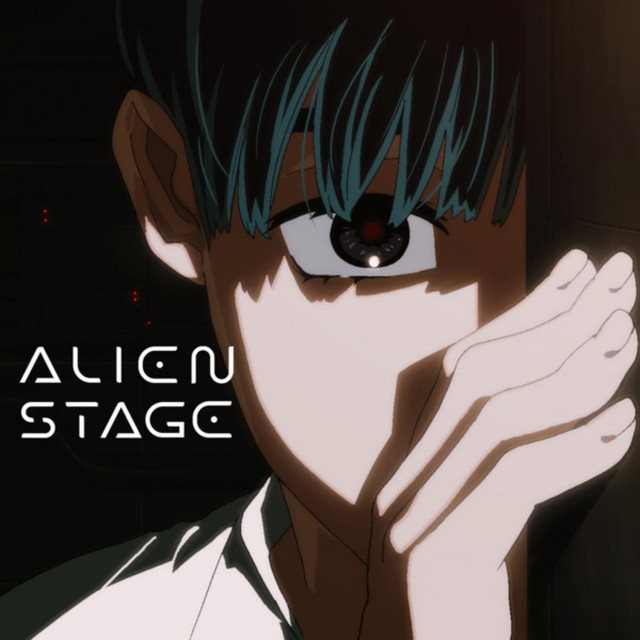
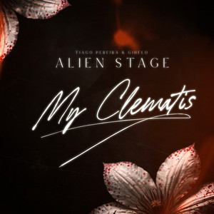

KARMA MIZI Y SUA

RULER OF MY HEART LUKA Y MIZI

WIEGE LUKA Y HYUNA

BLACK SORROW IVAN
.jpg)
CURE IVAN Y TILL

MY CLEMATIS MZII Y SUA
En Alien Stage, las canciones representan la única herramienta de supervivencia y expresión emocional en un sistema que deshumaniza al individuo, transformando el arte en un mecanismo de juicio mortal donde cada interpretación es un acto de resistencia o manipulación. La importancia de estas piezas radica en que funcionan como el lenguaje secreto a través del cual los personajes, atrapados bajo vigilancia constante, logran confesar sus traumas, obsesiones y amores prohibidos, convirtiendo el escenario en un espacio de brutal honestidad donde el puntaje obtenido no solo decide quién vive o muere, sino que sella el destino psicológico de quienes, al cantar, se ven obligados a confrontar sus arrepentimientos más profundos frente a sus verdugos

KARMA MIZI Y SUA
RULER OF MY HEART LUKA Y MIZI

WIEGE LUKA Y HYUNA

BLACK SORROW IVAN
CURE IVAN Y TILL

MY CLEMATIS MZII Y SUA